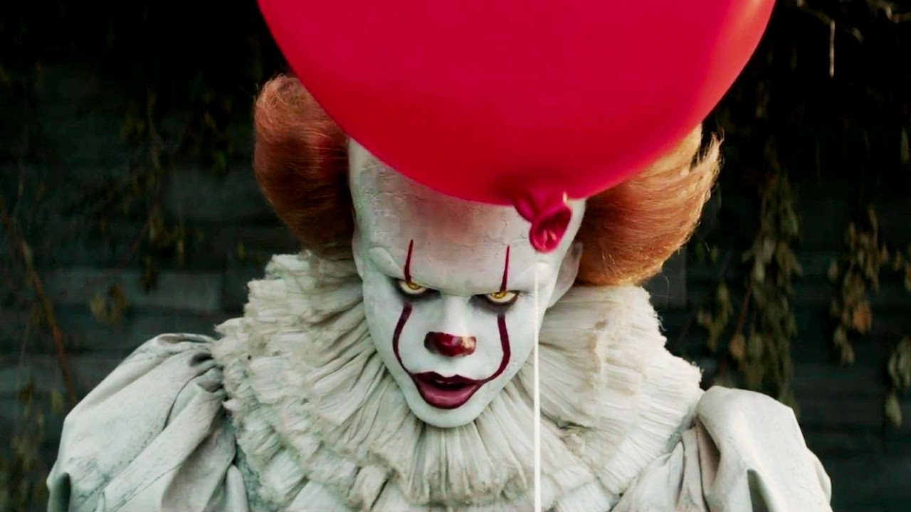

It, a coisa
It (em português A Coisa) é um romance de terror de 1986 do autor estadunidense Stephen King. Foi seu 22º livro e seu 17º romance escrito em seu próprio nome. O romance ganhou o British Fantasy Award em 1987 e recebeu indicações para o Locus Award e o World Fantasy Award no mesmo ano.
Sinopse
A história segue as experiências de sete crianças, que são aterrorizadas por uma entidade maligna que explora os medos de suas vítimas para se disfarçar enquanto caçam suas presas. "It" aparece principalmente na forma do palhaço Pennywise para atrair sua presa preferida: crianças pequenas.
O romance é contado através de narrativas alternadas entre dois períodos e é amplamente contado no modo onisciente da terceira pessoa. Ele lida com temas que acabaram se tornando itens básicos de King: o poder da memória, os traumas da infância e seus ecos recorrentes na idade adulta e a superação do mal através da confiança e do sacrifício mútuos.
Informações Gerais
| Gênero | Terror, Suspense |
|---|---|
| Data de Lançamento | 15 de setembro de 1986 |
| Autor | Stephen King |
| Número de Páginas | 1.138 (edição original) |
| Ambientação | Derry, Maine |
| Principais Personagens | Bill Denbrough, Pennywise, Beverly Marsh, Richie Tozier, Eddie Kaspbrak |
| Adaptações | Minissérie de 1990, Filmes de 2017 e 2019 |